Random-level at thousands of keys
Real Python measurements from 1,000 to 128,000 keys. 5 independently seeded trials per size and input family measure the random-level heuristic. Finite measurements do not establish logarithmic balance. All charts are downloadable SVGs.
Trial outcomes: 280 complete · 0 timed out · 0 not run after a group stopped · 0 errors. All records are included in the downloads.
Every graph has a muted dashed log₂(n) curve behind the measurements. It is an unscaled numeric reference, not a fitted bound or timing prediction; metric units remain as labelled.
Logarithmic x scale; y uses log(1 + value), so zeros remain visible. Whiskers show ±1 standard error. Missing points indicate incomplete groups; open the measurement tables for statuses.
Random sequences
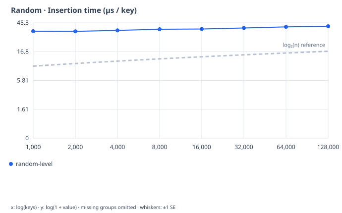
Download SVG
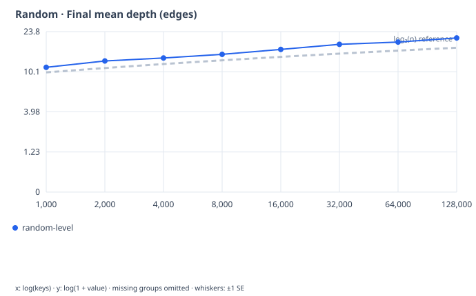
Download SVG
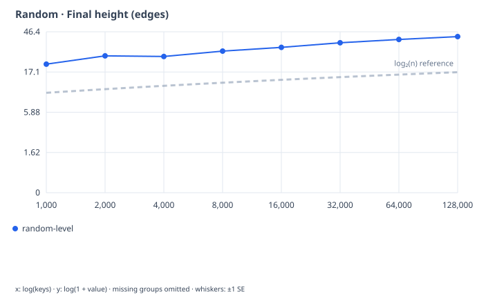
Download SVG
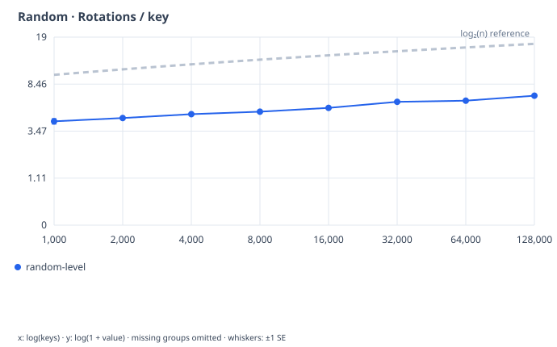
Download SVG
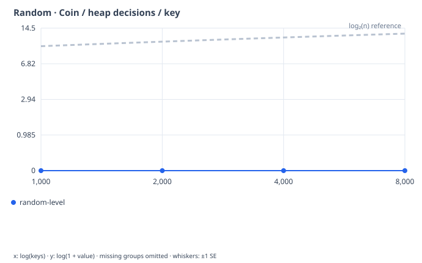
Download SVG

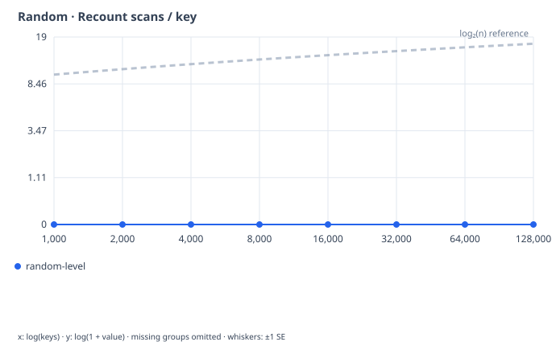
Download SVG
Measurements for random
| Strategy | Input | Keys | Status | Trials | µs/key | Seconds | Mean depth | Depth SE | Height | Insertion depth | Rot/key | Max rot | Decisions/key | Max decisions | Bits/key | Max bits | Scans/key | Max scans |
|---|---|---|---|---|---|---|---|---|---|---|---|---|---|---|---|---|---|---|
| random-level | random | 1e+03 | complete | 5/5 | 34 | 0.034 | 11.1 | 0.318 | 20.8 | 11.1 | 4.23 | 19 | 0 | 0 | 64 | 64 | 0 | 0 |
| random-level | random | 2e+03 | complete | 5/5 | 33.9 | 0.0677 | 12.8 | 0.0785 | 25.6 | 12.4 | 4.51 | 20 | 0 | 0 | 64 | 64 | 0 | 0 |
| random-level | random | 4e+03 | complete | 5/5 | 35 | 0.14 | 13.6 | 0.306 | 25.2 | 13.7 | 4.86 | 23 | 0 | 0 | 64 | 64 | 0 | 0 |
| random-level | random | 8e+03 | complete | 5/5 | 36.4 | 0.291 | 14.7 | 0.3 | 28.8 | 15 | 5.1 | 26 | 0 | 0 | 64 | 64 | 0 | 0 |
| random-level | random | 1.6e+04 | complete | 5/5 | 36.7 | 0.587 | 16.4 | 0.291 | 31.6 | 16.3 | 5.48 | 26 | 0 | 0 | 64 | 64 | 0 | 0 |
| random-level | random | 3.2e+04 | complete | 5/5 | 38 | 1.22 | 18.2 | 0.272 | 35.4 | 18 | 6.13 | 28 | 0 | 0 | 64 | 64 | 0 | 0 |
| random-level | random | 6.4e+04 | complete | 5/5 | 39.4 | 2.52 | 19.1 | 0.102 | 38.4 | 19.1 | 6.27 | 29 | 0 | 0 | 64 | 64 | 0 | 0 |
| random-level | random | 1.28e+05 | complete | 5/5 | 40.2 | 5.15 | 20.9 | 0.378 | 41.2 | 20.7 | 6.87 | 33 | 0 | 0 | 64 | 64 | 0 | 0 |
Increasing sequences
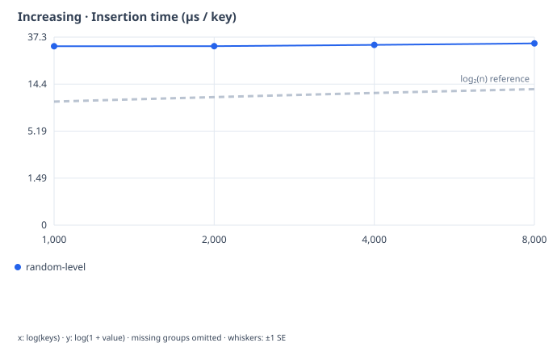
Download SVG
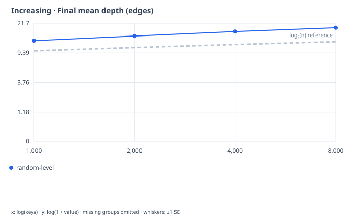
Download SVG
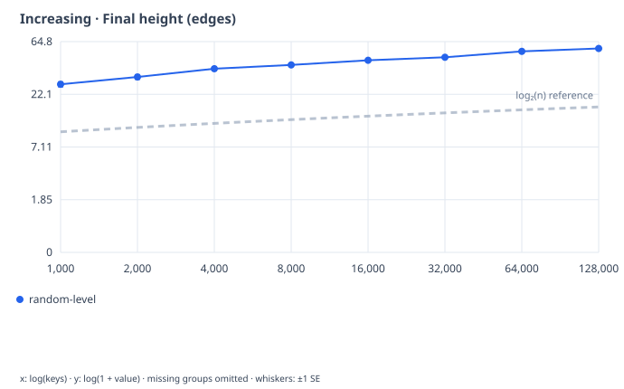
Download SVG
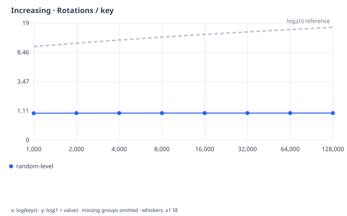
Download SVG
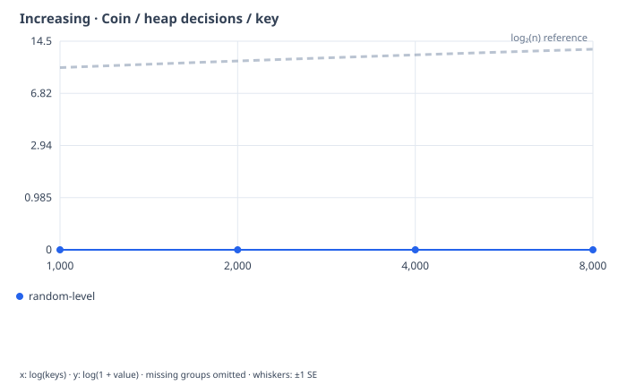
Download SVG
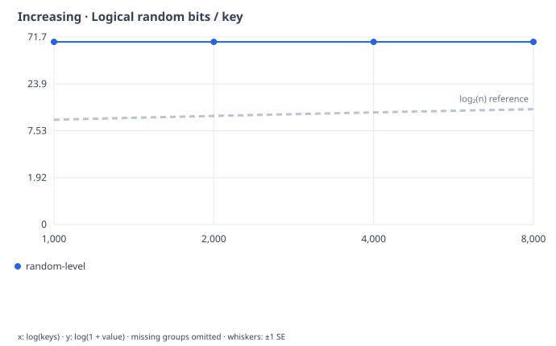
Download SVG

Measurements for increasing
| Strategy | Input | Keys | Status | Trials | µs/key | Seconds | Mean depth | Depth SE | Height | Insertion depth | Rot/key | Max rot | Decisions/key | Max decisions | Bits/key | Max bits | Scans/key | Max scans |
|---|---|---|---|---|---|---|---|---|---|---|---|---|---|---|---|---|---|---|
| random-level | increasing | 1e+03 | complete | 5/5 | 31.1 | 0.0311 | 13.3 | 0.317 | 27.2 | 7.36 | 0.992 | 10 | 0 | 0 | 64 | 64 | 0 | 0 |
| random-level | increasing | 2e+03 | complete | 5/5 | 31.1 | 0.0623 | 15.2 | 0.196 | 31.6 | 8.37 | 0.995 | 11 | 0 | 0 | 64 | 64 | 0 | 0 |
| random-level | increasing | 4e+03 | complete | 5/5 | 31.9 | 0.128 | 17.2 | 0.431 | 37.4 | 9.37 | 0.997 | 12 | 0 | 0 | 64 | 64 | 0 | 0 |
| random-level | increasing | 8e+03 | complete | 5/5 | 32.9 | 0.263 | 19.2 | 0.197 | 40.4 | 10.3 | 0.999 | 13 | 0 | 0 | 64 | 64 | 0 | 0 |
| random-level | increasing | 1.6e+04 | complete | 5/5 | 32.5 | 0.519 | 21.3 | 0.292 | 44.4 | 11.4 | 0.999 | 14 | 0 | 0 | 64 | 64 | 0 | 0 |
| random-level | increasing | 3.2e+04 | complete | 5/5 | 33.3 | 1.07 | 23.3 | 0.212 | 47.2 | 12.4 | 1 | 15 | 0 | 0 | 64 | 64 | 0 | 0 |
| random-level | increasing | 6.4e+04 | complete | 5/5 | 34.1 | 2.18 | 25.2 | 0.149 | 53.2 | 13.4 | 1 | 15 | 0 | 0 | 64 | 64 | 0 | 0 |
| random-level | increasing | 1.28e+05 | complete | 5/5 | 34.3 | 4.39 | 27 | 0.355 | 56.4 | 14.4 | 1 | 16 | 0 | 0 | 64 | 64 | 0 | 0 |
Decreasing sequences
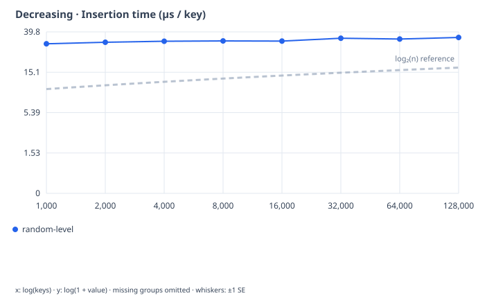
Download SVG
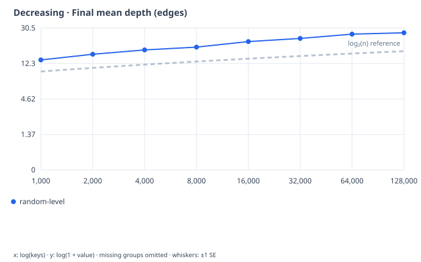
Download SVG
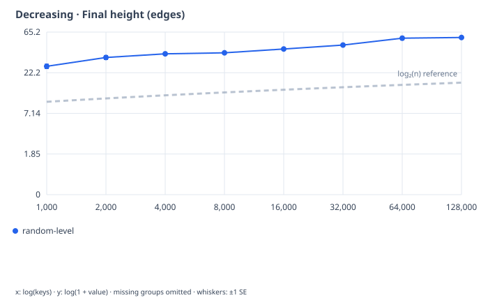
Download SVG
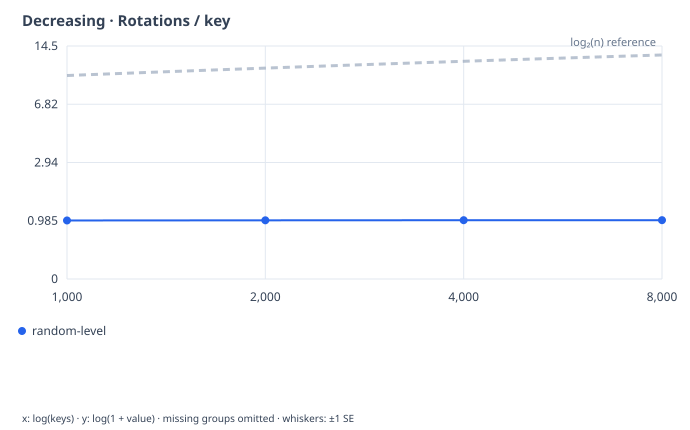
Download SVG
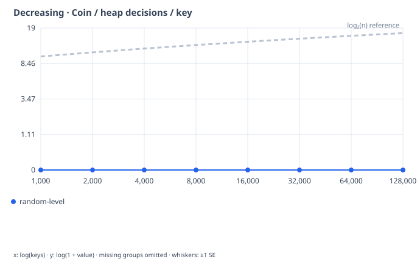
Download SVG
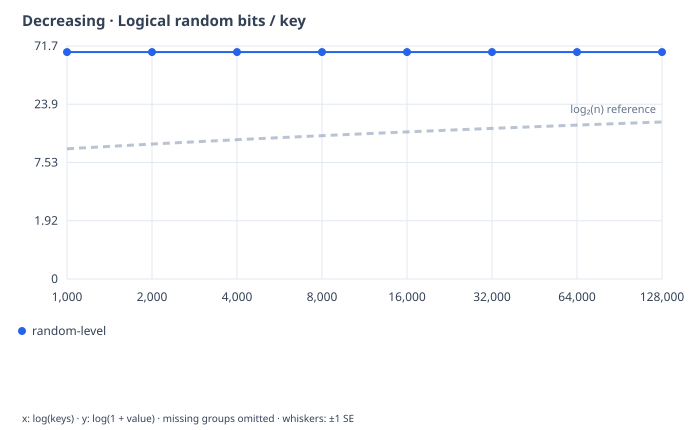
Download SVG
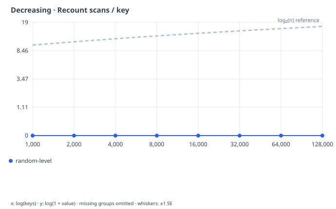
Download SVG
Measurements for decreasing
| Strategy | Input | Keys | Status | Trials | µs/key | Seconds | Mean depth | Depth SE | Height | Insertion depth | Rot/key | Max rot | Decisions/key | Max decisions | Bits/key | Max bits | Scans/key | Max scans |
|---|---|---|---|---|---|---|---|---|---|---|---|---|---|---|---|---|---|---|
| random-level | decreasing | 1e+03 | complete | 5/5 | 30 | 0.03 | 13.5 | 0.495 | 26.4 | 7.51 | 0.992 | 9 | 0 | 0 | 64 | 64 | 0 | 0 |
| random-level | decreasing | 2e+03 | complete | 5/5 | 31.2 | 0.0623 | 15.7 | 0.24 | 33.4 | 8.32 | 0.995 | 11 | 0 | 0 | 64 | 64 | 0 | 0 |
| random-level | decreasing | 4e+03 | complete | 5/5 | 31.9 | 0.128 | 17.5 | 0.259 | 36.8 | 9.39 | 0.998 | 12 | 0 | 0 | 64 | 64 | 0 | 0 |
| random-level | decreasing | 8e+03 | complete | 5/5 | 32.1 | 0.257 | 18.8 | 0.148 | 37.8 | 10.4 | 0.998 | 12 | 0 | 0 | 64 | 64 | 0 | 0 |
| random-level | decreasing | 1.6e+04 | complete | 5/5 | 32 | 0.513 | 21.7 | 0.221 | 41.8 | 11.4 | 0.999 | 14 | 0 | 0 | 64 | 64 | 0 | 0 |
| random-level | decreasing | 3.2e+04 | complete | 5/5 | 34.3 | 1.1 | 23.5 | 0.442 | 46.4 | 12.4 | 1 | 15 | 0 | 0 | 64 | 64 | 0 | 0 |
| random-level | decreasing | 6.4e+04 | complete | 5/5 | 33.6 | 2.15 | 26.2 | 0.305 | 55.6 | 13.4 | 1 | 16 | 0 | 0 | 64 | 64 | 0 | 0 |
| random-level | decreasing | 1.28e+05 | complete | 5/5 | 34.9 | 4.47 | 27.1 | 0.175 | 56.6 | 14.4 | 1 | 16 | 0 | 0 | 64 | 64 | 0 | 0 |
Converging sequences
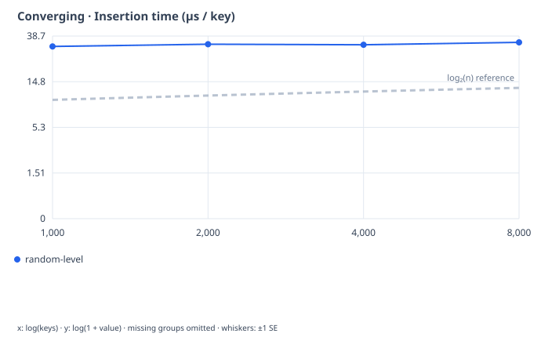
Download SVG
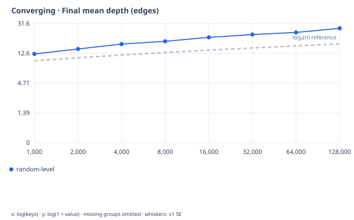
Download SVG
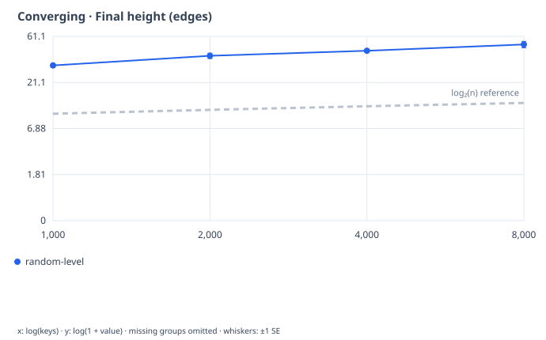
Download SVG
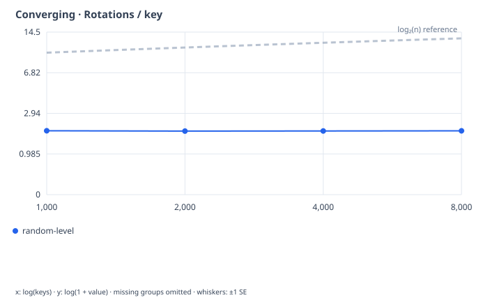
Download SVG

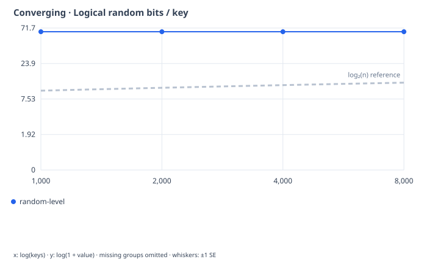
Download SVG
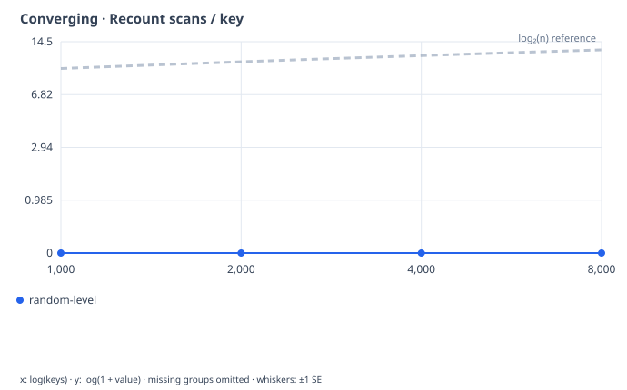
Download SVG
Measurements for converging
| Strategy | Input | Keys | Status | Trials | µs/key | Seconds | Mean depth | Depth SE | Height | Insertion depth | Rot/key | Max rot | Decisions/key | Max decisions | Bits/key | Max bits | Scans/key | Max scans |
|---|---|---|---|---|---|---|---|---|---|---|---|---|---|---|---|---|---|---|
| random-level | converging | 1e+03 | complete | 5/5 | 31.2 | 0.0312 | 12.4 | 0.1 | 31.4 | 8.82 | 1.94 | 11 | 0 | 0 | 64 | 64 | 0 | 0 |
| random-level | converging | 2e+03 | complete | 5/5 | 32.7 | 0.0653 | 14.5 | 0.223 | 39.2 | 9.83 | 1.92 | 11 | 0 | 0 | 64 | 64 | 0 | 0 |
| random-level | converging | 4e+03 | complete | 5/5 | 32.3 | 0.129 | 16.9 | 0.574 | 44 | 10.8 | 1.93 | 13 | 0 | 0 | 64 | 64 | 0 | 0 |
| random-level | converging | 8e+03 | complete | 5/5 | 34 | 0.272 | 18.4 | 0.316 | 50.8 | 11.8 | 1.93 | 14 | 0 | 0 | 64 | 64 | 0 | 0 |
| random-level | converging | 1.6e+04 | complete | 5/5 | 33.5 | 0.536 | 20.8 | 0.205 | 58.8 | 12.8 | 1.93 | 14 | 0 | 0 | 64 | 64 | 0 | 0 |
| random-level | converging | 3.2e+04 | complete | 5/5 | 34.7 | 1.11 | 22.6 | 0.324 | 68.4 | 13.8 | 1.94 | 16 | 0 | 0 | 64 | 64 | 0 | 0 |
| random-level | converging | 6.4e+04 | complete | 5/5 | 34.8 | 2.23 | 24.1 | 0.291 | 71.4 | 14.8 | 1.94 | 17 | 0 | 0 | 64 | 64 | 0 | 0 |
| random-level | converging | 1.28e+05 | complete | 5/5 | 35.9 | 4.59 | 27.4 | 0.849 | 79.8 | 15.8 | 1.94 | 18 | 0 | 0 | 64 | 64 | 0 | 0 |
Pairs sequences
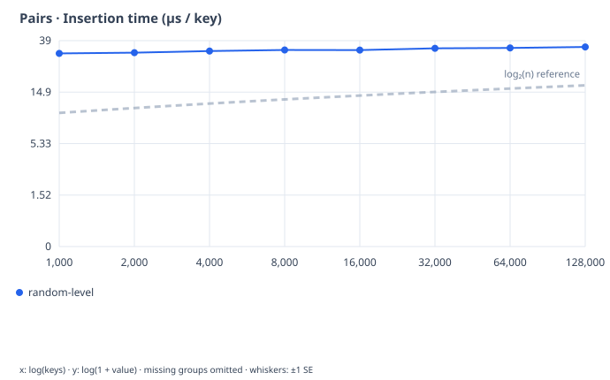
Download SVG
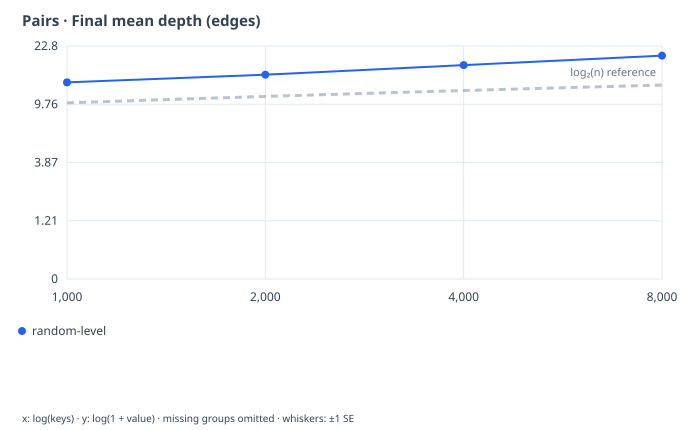
Download SVG
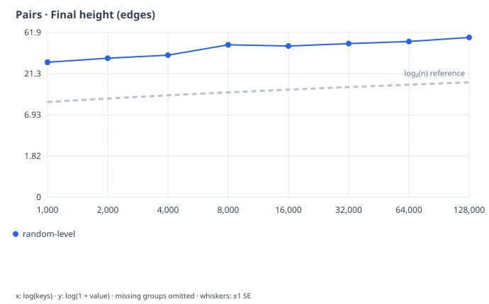
Download SVG
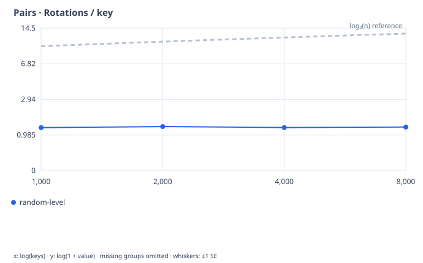
Download SVG


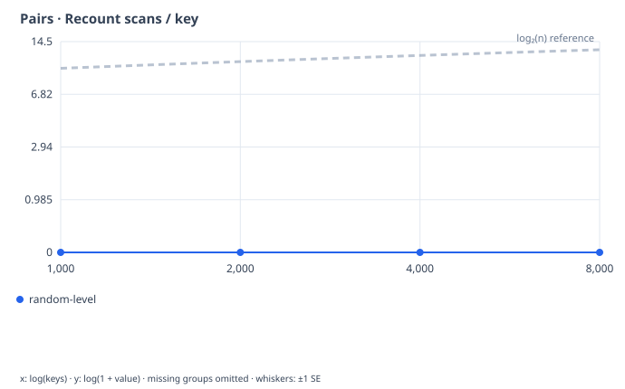
Download SVG
Measurements for pairs
| Strategy | Input | Keys | Status | Trials | µs/key | Seconds | Mean depth | Depth SE | Height | Insertion depth | Rot/key | Max rot | Decisions/key | Max decisions | Bits/key | Max bits | Scans/key | Max scans |
|---|---|---|---|---|---|---|---|---|---|---|---|---|---|---|---|---|---|---|
| random-level | pairs | 1e+03 | complete | 5/5 | 30.8 | 0.0308 | 13.5 | 0.507 | 28.8 | 7.68 | 1.29 | 10 | 0 | 0 | 64 | 64 | 0 | 0 |
| random-level | pairs | 2e+03 | complete | 5/5 | 31.3 | 0.0625 | 15.1 | 0.284 | 32 | 8.79 | 1.33 | 11 | 0 | 0 | 64 | 64 | 0 | 0 |
| random-level | pairs | 4e+03 | complete | 5/5 | 32.2 | 0.129 | 17.3 | 0.488 | 34.6 | 9.61 | 1.29 | 13 | 0 | 0 | 64 | 64 | 0 | 0 |
| random-level | pairs | 8e+03 | complete | 5/5 | 32.9 | 0.263 | 19.8 | 0.476 | 45.2 | 10.6 | 1.31 | 15 | 0 | 0 | 64 | 64 | 0 | 0 |
| random-level | pairs | 1.6e+04 | complete | 5/5 | 32.8 | 0.525 | 20.9 | 0.268 | 43.8 | 11.7 | 1.31 | 16 | 0 | 0 | 64 | 64 | 0 | 0 |
| random-level | pairs | 3.2e+04 | complete | 5/5 | 33.9 | 1.08 | 23 | 0.185 | 46.6 | 12.6 | 1.31 | 17 | 0 | 0 | 64 | 64 | 0 | 0 |
| random-level | pairs | 6.4e+04 | complete | 5/5 | 34.1 | 2.18 | 24.9 | 0.207 | 49.2 | 13.7 | 1.31 | 17 | 0 | 0 | 64 | 64 | 0 | 0 |
| random-level | pairs | 1.28e+05 | complete | 5/5 | 34.7 | 4.45 | 26.5 | 0.396 | 54.6 | 14.7 | 1.32 | 18 | 0 | 0 | 64 | 64 | 0 | 0 |
Bitonic sequences
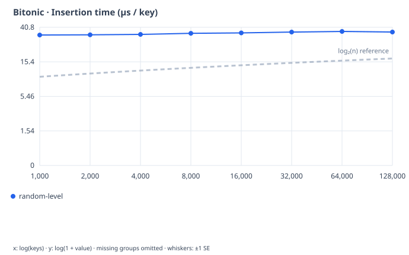
Download SVG
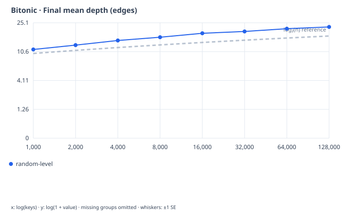
Download SVG
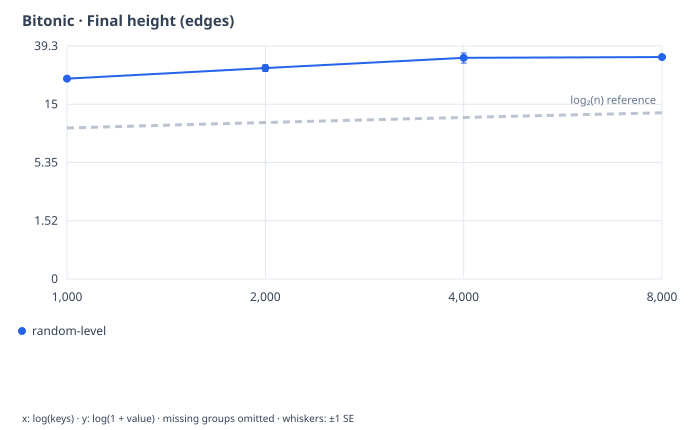
Download SVG
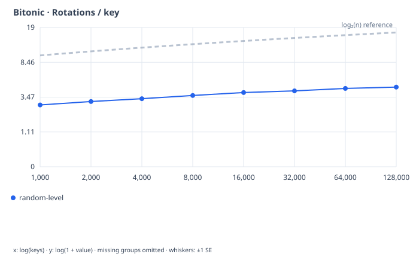
Download SVG
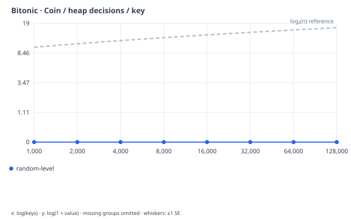
Download SVG
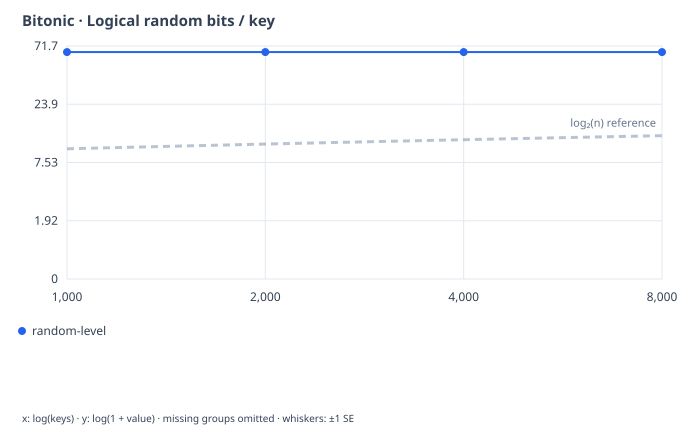
Download SVG
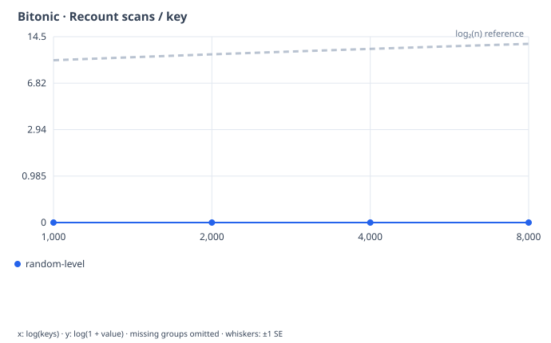
Download SVG
Measurements for bitonic
| Strategy | Input | Keys | Status | Trials | µs/key | Seconds | Mean depth | Depth SE | Height | Insertion depth | Rot/key | Max rot | Decisions/key | Max decisions | Bits/key | Max bits | Scans/key | Max scans |
|---|---|---|---|---|---|---|---|---|---|---|---|---|---|---|---|---|---|---|
| random-level | bitonic | 1e+03 | complete | 5/5 | 32.9 | 0.0329 | 11.3 | 0.275 | 23 | 9.47 | 2.78 | 16 | 0 | 0 | 64 | 64 | 0 | 0 |
| random-level | bitonic | 2e+03 | complete | 5/5 | 33.1 | 0.0661 | 12.9 | 0.254 | 27.4 | 10.7 | 3.07 | 18 | 0 | 0 | 64 | 64 | 0 | 0 |
| random-level | bitonic | 4e+03 | complete | 5/5 | 33.4 | 0.134 | 14.8 | 0.502 | 32.4 | 12 | 3.32 | 20 | 0 | 0 | 64 | 64 | 0 | 0 |
| random-level | bitonic | 8e+03 | complete | 5/5 | 34.5 | 0.276 | 16.4 | 0.364 | 32.8 | 13.3 | 3.63 | 21 | 0 | 0 | 64 | 64 | 0 | 0 |
| random-level | bitonic | 1.6e+04 | complete | 5/5 | 34.9 | 0.558 | 18.4 | 0.613 | 37.2 | 14.6 | 3.94 | 24 | 0 | 0 | 64 | 64 | 0 | 0 |
| random-level | bitonic | 3.2e+04 | complete | 5/5 | 35.7 | 1.14 | 19.4 | 0.303 | 42.2 | 15.8 | 4.12 | 23 | 0 | 0 | 64 | 64 | 0 | 0 |
| random-level | bitonic | 6.4e+04 | complete | 5/5 | 36.3 | 2.32 | 21.1 | 0.403 | 44.2 | 17 | 4.39 | 25 | 0 | 0 | 64 | 64 | 0 | 0 |
| random-level | bitonic | 1.28e+05 | complete | 5/5 | 35.7 | 4.57 | 22.2 | 0.203 | 47.4 | 18.2 | 4.55 | 26 | 0 | 0 | 64 | 64 | 0 | 0 |
Runs sequences
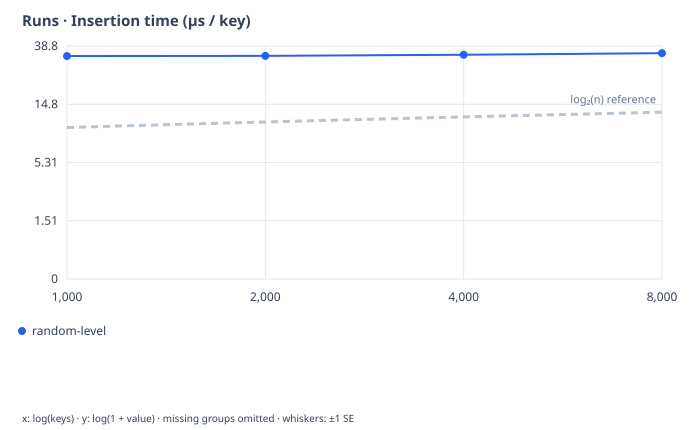
Download SVG
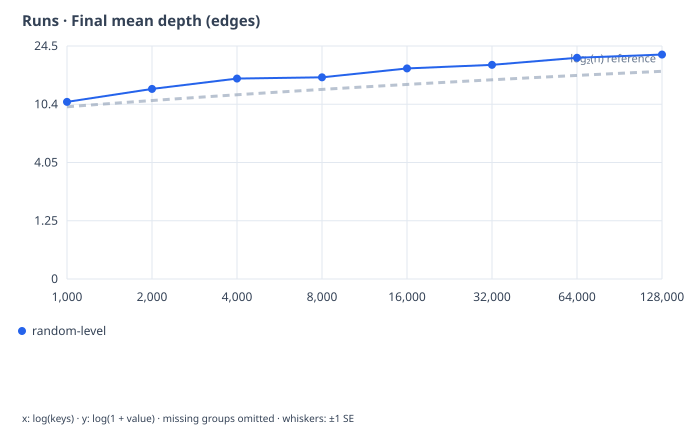
Download SVG
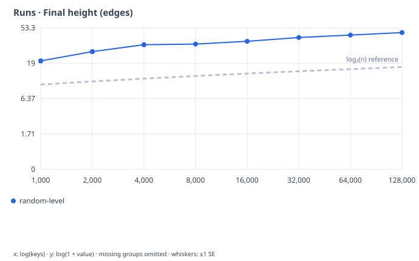
Download SVG
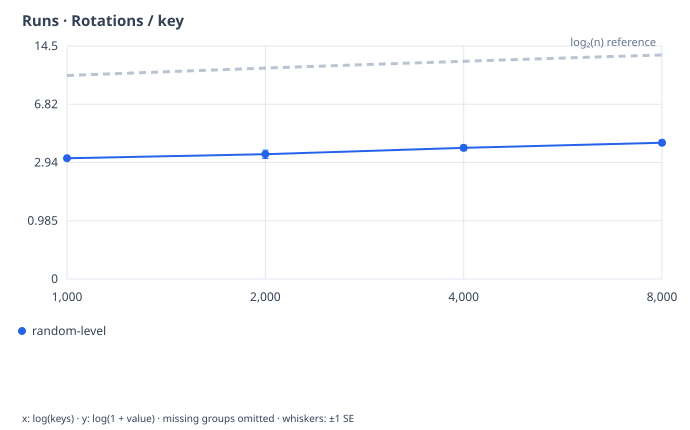
Download SVG
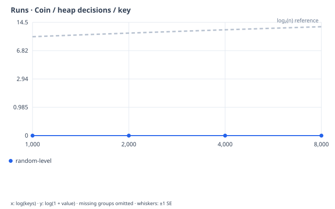
Download SVG
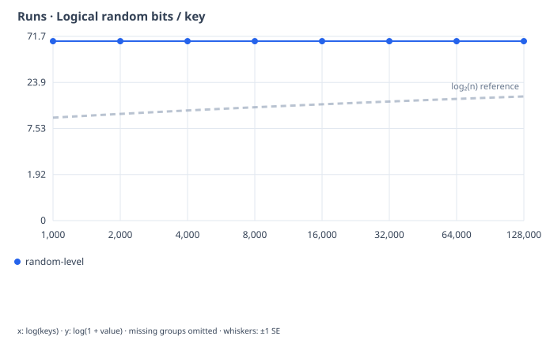
Download SVG
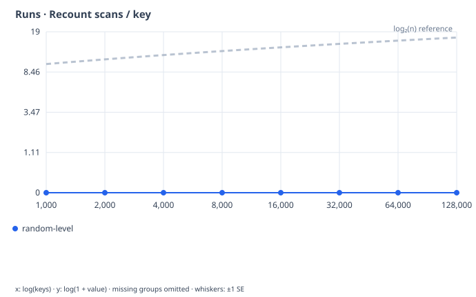
Download SVG
Measurements for runs
| Strategy | Input | Keys | Status | Trials | µs/key | Seconds | Mean depth | Depth SE | Height | Insertion depth | Rot/key | Max rot | Decisions/key | Max decisions | Bits/key | Max bits | Scans/key | Max scans |
|---|---|---|---|---|---|---|---|---|---|---|---|---|---|---|---|---|---|---|
| random-level | runs | 1e+03 | complete | 5/5 | 32.9 | 0.0329 | 10.7 | 0.292 | 20.4 | 9.79 | 3.14 | 23 | 0 | 0 | 64 | 64 | 0 | 0 |
| random-level | runs | 2e+03 | complete | 5/5 | 33 | 0.0661 | 13.1 | 0.342 | 26.8 | 11 | 3.34 | 23 | 0 | 0 | 64 | 64 | 0 | 0 |
| random-level | runs | 4e+03 | complete | 5/5 | 33.6 | 0.135 | 15.2 | 0.404 | 32.8 | 12.3 | 3.68 | 22 | 0 | 0 | 64 | 64 | 0 | 0 |
| random-level | runs | 8e+03 | complete | 5/5 | 34.5 | 0.276 | 15.5 | 0.197 | 33.4 | 13.6 | 3.97 | 32 | 0 | 0 | 64 | 64 | 0 | 0 |
| random-level | runs | 1.6e+04 | complete | 5/5 | 34.7 | 0.555 | 17.7 | 0.391 | 36.2 | 14.7 | 4.06 | 32 | 0 | 0 | 64 | 64 | 0 | 0 |
| random-level | runs | 3.2e+04 | complete | 5/5 | 35.6 | 1.14 | 18.7 | 0.146 | 40.4 | 16.3 | 4.63 | 34 | 0 | 0 | 64 | 64 | 0 | 0 |
| random-level | runs | 6.4e+04 | complete | 5/5 | 36.2 | 2.32 | 20.7 | 0.293 | 43.4 | 17.5 | 4.81 | 38 | 0 | 0 | 64 | 64 | 0 | 0 |
| random-level | runs | 1.28e+05 | complete | 5/5 | 35.4 | 4.53 | 21.7 | 0.233 | 46.6 | 18.8 | 5.12 | 38 | 0 | 0 | 64 | 64 | 0 | 0 |
Every result, ready to inspect
How to read these results
- perf_counter around the instrumented insertion loop, including cost counters; excludes input generation, warmup, process startup, final invariant validation and rendering.
- End-to-end deadline per subprocess, including warmup and validation. A timeout is censored, not a runtime or a completed tree. Remaining trials in that group are not run.
- One fixed permutation per size shared across strategies/trials; paired rotation seeds derived with SHA-256. SE is across trial seeds, conditional on that input.
- Sequential isolated subprocesses on this computer; no parallel timed trials.
- Python instrumentation timings, not bare algorithm timings. No general complexity or balance guarantee follows from these finite samples. No timing comparison is made against the optimized browser preview.
- Each group requests 5 trials. Deadline: 10 seconds per process. Root depth is zero; height counts edges. All completed trees pass ordering, parent-link, cycle and key-set checks.
- Charts include fully completed groups only, with ±1 standard error where available. Timeout groups can have partial trial metrics in the full table and downloads. Missing data is never plotted as zero.